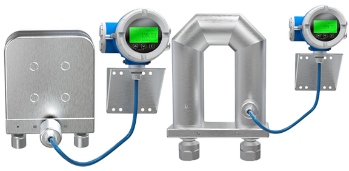
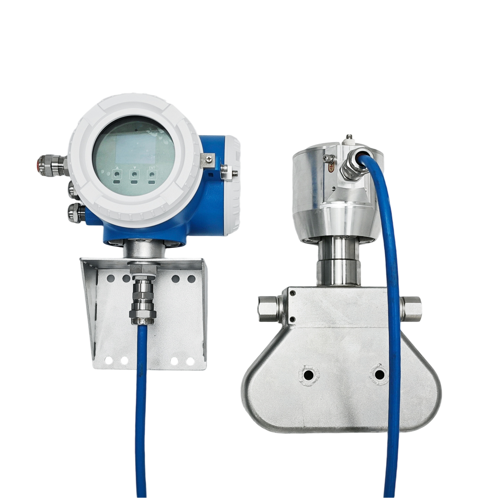

Широкий U-образный профиль — измерительные трубки с увеличенным радиусом изгиба, предназначенные для работы в условиях высокого и сверхвысокого давления. Оптимизированы для измерения расхода водорода, гелия и азота.
Благодаря широкому U-образному профилю уменьшаются механические напряжения в стенках трубок, что позволяет выдерживать экстремальные давления без потери чувствительности. Конструкция успешно применяется в водородной энергетике, системах заправки газов высокого давления, криогенных и химических процессах.
Тип K комплектуется трансмиттерами ME100, ME200 или ME300. Доступные материалы измерительных трубок — нержавеющая сталь 316L, Hastelloy C-22, а также специальные композитные металлы, стойкие к водородному охрупчиванию. Возможна комплектация высоконапорными присоединениями UNF, VCO/VCR.


| Модель | Условный диаметр | Максимальное давление, МПа | Максимальный расход, кг/ч |
|---|---|---|---|
| Mass-EXPERT-003..K | DN03 | ≤ 96 / ≤ 50 / ≤ 40 | 180 |
| Mass-EXPERT-004..K | DN04 | ≤ 35 | 300 |
| Mass-EXPERT-008..K | DN08 | ≤ 30 / ≤ 45 | 1 200 |
| Mass-EXPERT-015..K | DN15 | ≤ 30 / ≤ 45 | 3 600 |
| Mass-EXPERT-025..K | DN25 | ≤ 45 | 12 000 |
* Для типоразмера 003 указаны несколько значений давления в зависимости от исполнения присоединений. Для типоразмеров 008 и 015 значения зависят от модификации.
| Область применения | Описание |
|---|---|
| Водородная энергетика | Заправка H₂ под высоким давлением, дозирование, коммерческий учёт |
| Гелиевые системы | Измерение расхода гелия при сверхвысоком давлении, криогенные процессы |
| Азотные станции | Учёт азота высокого давления, системы азотного пожаротушения |
| Химическая промышленность | Агрессивные среды, давление до 96 МПа, пульсирующие потоки |
| Нефтегазовый сектор | Высоконапорные газовые и жидкостные линии, системы впрыска реагентов |